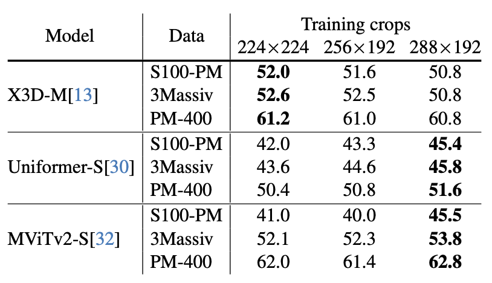
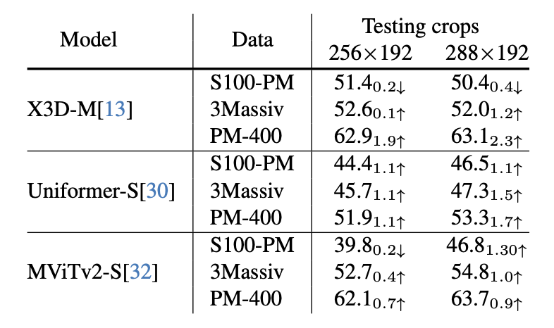
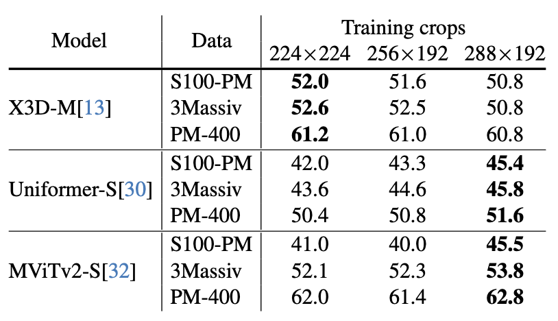
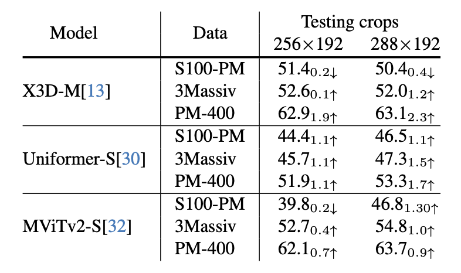

Abstract
The creation of new datasets often presents new challenges for video recognition and can inspire novel ideas while addressing these challenges. While existing datasets mainly comprise landscape mode videos, our paper seeks to introduce portrait mode videos to the research community and highlight the unique challenges associated with this video format. With the growing popularity of smartphones and social media applications, recognizing portrait mode videos is becoming increasingly important.
To this end, we have developed the first dataset dedicated to portrait mode video recognition, namely PortraitMode-400. The taxonomy of PortraitMode-400 was constructed in a data-driven manner, comprising 400 fine-grained categories, and rigorous quality assurance was implemented to ensure the accuracy of human annotations.
In addition to the new dataset, we conducted a comprehensive analysis of the impact of video format (portrait mode versus landscape mode) on recognition accuracy and spatial bias due to the different formats.
Furthermore, we designed extensive experiments to explore key aspects of portrait mode video recognition, including the choice of data augmentation and evaluation procedure. Building on the insights from our experimental results and the introduction of PortraitMode-400, our paper aims to inspire further research efforts in this emerging research area.
PortraitMode-400
While existing video datasets are mostly built on landscape mode videos, portrait mode videos have become increasingly more popular on major social media applications. The shift from landscape mode to portrait mode is not just changing the aspect ratios of the videos. It has significant implications for the types of content that are created and the spatial bias inherent in the data.
Portrait mode videos bring in distinct challenges for video recognition as well. For example, they tend to focus more on the subject (i.e., typically humans) with much less background context, and include more egocentric content. In addition, they contain a lot of verbal communication that is essential to understand the video content. There is a pressing need for portrait mode video datasets to explore these new research problems.
To facilitate the research in portrait mode videos, we introduce the first dataset dedicated to portrait mode video recognition, named PotraitMode-400. Some demo videos are shown above.
Taxonomy
Click on each of the parent nodes to view an overview of its sub-categoris.The PortraitMode-400 dataset was developed using a unique taxonomy created from Douyin video search queries, focusing on action-oriented content. Unlike existing datasets, which often repurpose categories, PortraitMode-400’s taxonomy is crafted from the ground up, analyzing around 38,000 queries to select approximately 2,400 with clear action or motion, leading to about 500 distinct, action-focused categories arranged in a hierarchical structure. This method ensures comprehensive coverage of diverse content types, including daily activities, natural events, and transport scenes, with a notable depth in categories, such as 89 distinct types under food alone. This approach offers a more detailed and relevant classification system for portrait mode videos, diverging from broader classifications seen in datasets like Kinetics-400 or 3Massiv.
Portrait Mode vs. Landscape Mode
Question: How are the portrait mode video different from landscape modes videos?
Answer: We show the different data priors of videos in different display mode by the above accuracy difference map. The first thing to emphasize is that it is not just an aspect ratio change between PM videos and LM videos. It include different topic selection, shooting approach and content arrangement. To visualize such difference, we train models with S100-PM and S100-LM seperately and test them exhaustively on local spatial segments of either S100-PM test or S100-LM test videos, and make difference. Our findings demonstrate that models trained on LM and PM videos exhibit proficiency in different spatial regions of the videos corresponding to their training data. This reveals the distinct data biases inherent in LM and PM videos.
Optimal protocols
 



Question: What are the optimal training and testing protocols for portrait mode video recognition?
Answer: We delve into various components of state-of-the-art deep learning systems, such as data augmentation, evaluation cropping strategies, etc. Some of our findings contradict the current standard practices for landscape mode videos, highlighting the need for further research in the domain of portrait mode videos.